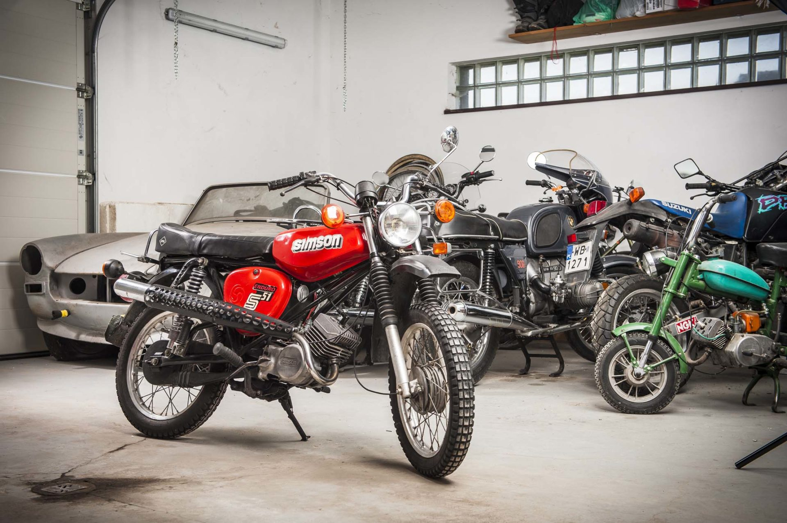

- Silnik spalinowy: 2-suwowy, jednocylindrowy
- Pojemność skokowa: 50 cm³
- Moc: 3,7 KM (2,72 kW) przy 5500 obr./min
- Maksymalny moment obrotowy: 5 Nm przy 4800 obr./min
- Zużycie paliwa: 2,4 l/100 km przy 60 km/h
- Średnica cylindra: 38 mm
- Skok tłoka: 44 mm
- Stopień sprężania: 9,5:1
Produkcję tego modelu rozpoczęto w 1982 roku na podstawie modelu B2-4. Wprowadzone w nim zmiany to: wzmocniona dokręcanymi zastrzałami rama (przez zastrzały masa motoroweru wzrosła z 79,5 do 84 kg w porównaniu do wersji B1-3 i B1-4), kierownica o wyższym profilu, składany starter nożny oraz podniesione kolanko wydechowe wraz z tłumikiem osłoniętym blaszaną osłoną. Ze względu na zmianę usytuowania tłumika konieczne było zmodyfikowanie kilku innych podzespołów. Zmieniono wyprofilowanie osłonki bocznej, aby tłumik nie rysował jej powierzchni i był możliwy dostęp do schowka filtra powietrza. Dźwignia hamulca tylnego została odsunięta bardziej na zewnątrz pojazdu by umożliwić łatwe operowanie. Prawy wspornik ramy otrzymał zmieniony wspornik podnóżka pasażera.
Należy podkreślić, że modele S51 Enduro przeznaczone były do codziennej eksploatacji na drogach utwardzonych, jak również jazdy w łatwym terenie przy obciążeniu wyłącznie kierowcą. Producent zabronił używania motoroweru w warunkach zbliżonych do motocrossu.